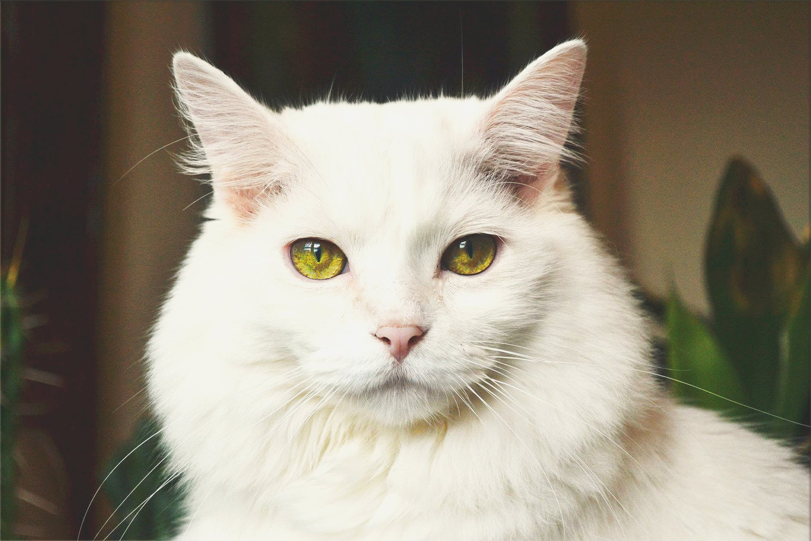

Adoptá
Ya sea que quieras dar un hogar temporal o permanente a uno de nuestros rescatados, este es el lugar indicadado. Conocé todas las mascotas que se encuentran en nuestro refugio listas para darte mucho, mucho amor.
Actualmente en adopción

Juan, 5 años
Alma, 2 años

Kity, 2 años

Pancho, 1 año

Pompón, 8 meses

Michi, 11 meses
¿Tenés preguntas?
Si tenés preguntas podés mandarnos un WhatsApp al +54 387 4123456. También podés enviar un correo a contacto@patasynarices.org.ar.